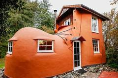

-
5 đại học Việt Nam vào top trường ở các nền kinh tế mới nổi
Đại học Tôn Đức Thắng giữ vị trí 82, cao nhất trong số 5 trường ở Việt Nam góp mặt trong bảng xếp hạng đại học thế giới tại các nền kinh tế mới nổi của THE 2022.
-
Ronaldo được dự đoán thay Solskjaer
ANHTheo các nhà cái, Cristiano Ronaldo đứng thứ năm trong danh sách các ứng viên thế chỗ HLV Ole Gunnar Solskjaer dẫn dắt Man Utd.
-
'Không thả lỏng người đi từ vùng dịch về'
Người từ vùng dịch trở về địa phương có thể không cách ly tập trung song phải thắt chặt giám sát và xét nghiệm để chặn trước nguồn lây, không để dịch lan rộng, theo chuyên gia.
-

Nhà hình ủng đậm nét cổ tích, tạo không gian để hâm nóng tình yêu
Với lối kiến trúc cổ xưa, và được thiết kế "chỉ cho riêng 2 người", như phòng tắm đôi, sofa nhỏ, bàn 2 người... đây là không gian ngọt ngào lý tưởng để các cặp đôi hâm nóng tình yêu.
-
Hà Nội xét duyệt giải thưởng nhà giáo tâm huyết, sáng tạo
Trong 2 ngày 26-27/10, ngành GD-ĐT Hà Nội tổ chức vòng chung khảo xét duyệt giải thưởng “Nhà giáo Hà Nội tâm huyết, sáng tạo” lần thứ 5 năm học 2020 – 2021 theo hình thức trực tuyến tới gần 300 điểm cầu các đơn vị trường học.